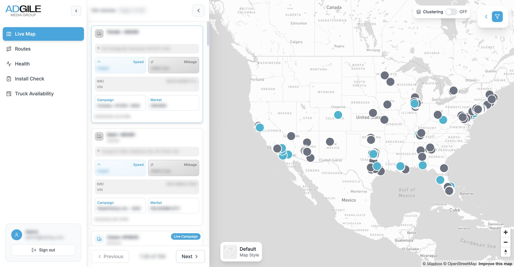
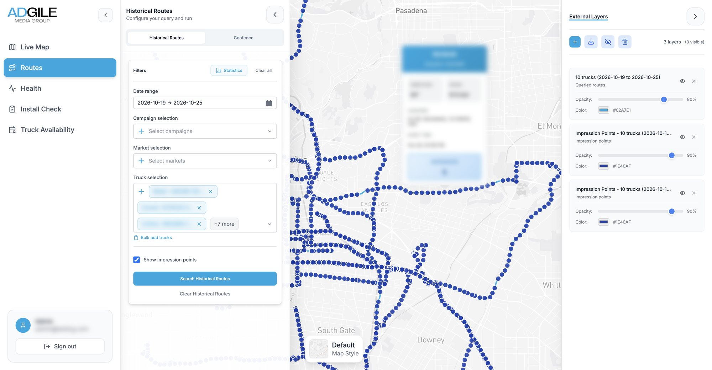
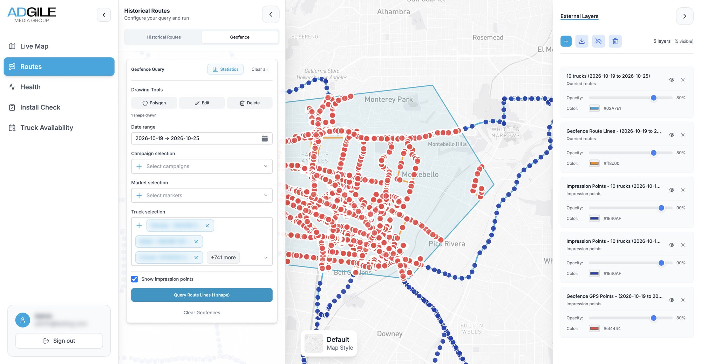
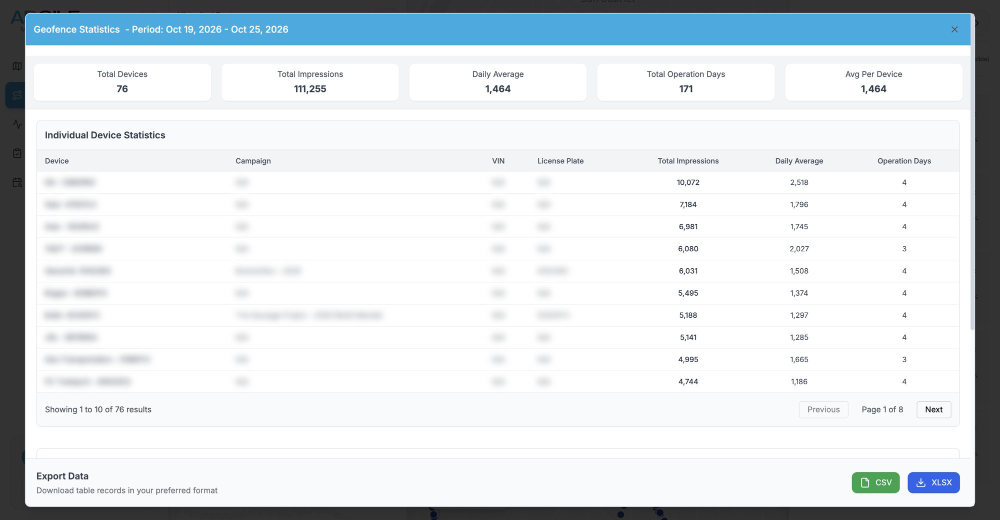
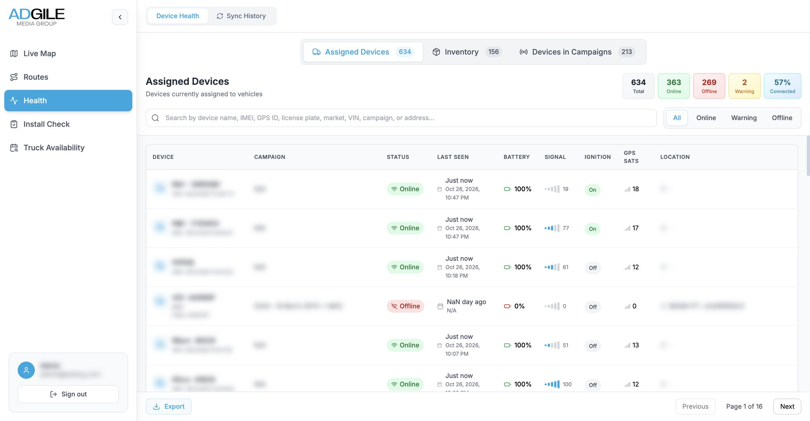
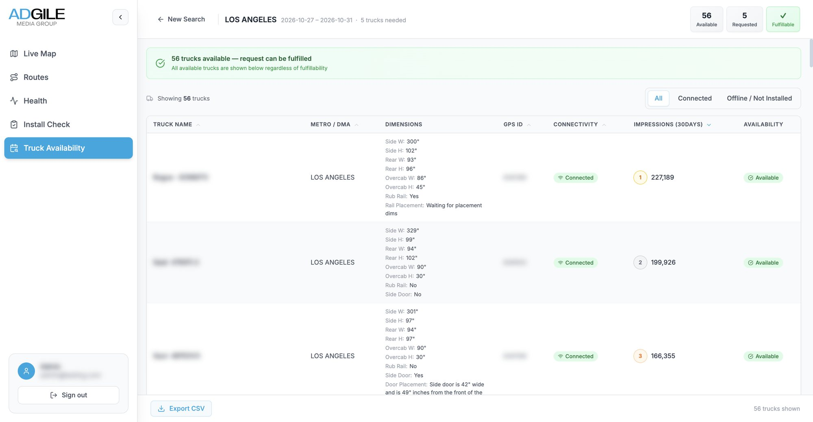
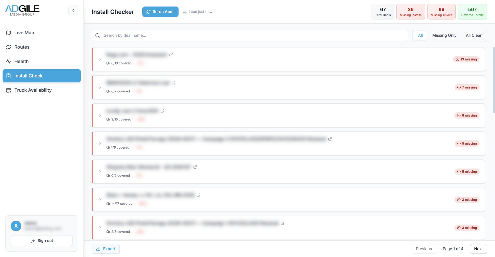
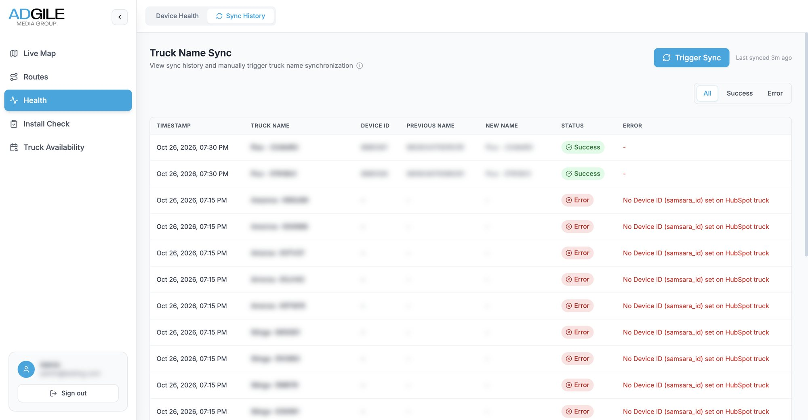

Industry work · out-of-home advertising · US metros
Fleet Dashboard
Where every billboard truck is now, where it has been, and proof for the advertiser that it was there.
- Company
- Adgile Media Group, which runs advertising on trucks
- Role
- Geospatial software engineer, one of two engineers on the platform
- Years
- 2025–2026
- Stack
- React · Mapbox GL · NestJS · PostgreSQL + PostGIS · Firebase · Google Cloud

The live map. Names, device ids, addresses and campaigns are blurred throughout this page.
The brief
Advertisers pay to be seen, so prove it
Adgile wraps box trucks in a brand's advertising and drives them through the streets of US cities on planned routes. A GPS unit on each truck reports its position, speed, battery and signal all day long. On their own those pings are just noise; the business needs them answered as questions. Where is each truck right now? Did it drive the route the client paid for? How many people could have seen it, and where?
The dashboard is where staff ask those questions. I worked on it from the first commit, on both the web app and the API behind it, alongside one other engineer: the live map, route history, geofencing, the fleet health tab, the CRM sync and truck availability are the parts I built and describe here.
01 · Route history and impressions
Replay any week, for any truck
Pick a date range and any set of trucks, by name, campaign or city, and their routes come back snapped to the street network. Each dot is an impression point: a moment where a measurement partner counted the people who could see the truck, and every one opens a card with its numbers. Every query becomes a layer on the right, with its own colour and opacity, so several can be compared, hidden or exported.
- Upload planned routes as GPX or CSV, several files at once, to lay the plan over what was driven
- The map fits itself to wherever the trucks went, even when a campaign runs in several cities

Ten trucks over one week in Los Angeles, with one impression point's card open.
02 · Geofencing
Draw a shape, get the campaign inside it
Clients often care about one neighbourhood, a stadium or a stretch of avenue, not the whole day's drive. Staff draw a polygon on the map and the API clips every road-matched route to it in PostGIS, in one query. Inside the shape, routes turn orange and GPS points red; outside they stay blue. A statistics table then totals the trucks, impressions and days of operation inside, ready to export as CSV or Excel.
- Hand-drawn shapes cross themselves, so each is checked and repaired before it touches a query
- Truck and campaign details are copied onto each route when it is written, so the clip needs no joins and stays fast
- Exports stream row by row, so a whole campaign downloads instead of stopping at a row cap

A polygon over Montebello and Monterey Park, queried across every truck for a week.

The statistics for that shape, per truck.
| Inside | Of route | Impressions | |
|---|---|---|---|
| Truck A | |||
| Truck B | |||
| Truck C | |||
| All |
Try it
The same clip, in your hands
Drag the orange shape, or any of its corners. The three routes are cut to it the way the dashboard's query cuts real ones, and the table adds up the distance and impressions inside. The routes and numbers here are made up.
03 · Fleet health
Find the truck that went quiet
A truck with a flat tracker is a campaign with a hole in its proof. The health tab sorts every device into online, warning and offline, beside its last report, battery, signal, ignition and satellite count, so a dead unit can be caught while the campaign is still running. It splits the fleet into assigned devices, spare inventory and devices on live campaigns, searches across every field, and exports.


04 · Truck availability
Can we take this campaign?
When a client asks for, say, five trucks in Los Angeles next week, the answer is spread across trucks and deals in the CRM. Sales enter the city, the dates and the number of trucks. The API takes every truck in that city marked ready to use, removes any truck already booked on a deal whose dates overlap, and says whether the request can be filled.
- Ranked by recent reach: each free truck carries its impressions over the last 30 days
- Wrap dimensions for every truck, side, rear and over the cab, beside the result
05 · Also in the app
Audits that keep the CRM honest
Two more tools in the same app, which my colleague led: an install check that lists every live campaign whose trucks have no installation booked, and a sync that keeps truck names in the CRM and the tracking system the same, logging every change and every failure.


How it works
Four streams, one dashboard
Four kinds of data arrive at different speeds, from seconds to once a night. Follow a colour from where it starts on the left to the screen staff use on the right.
- 1Live position
- 2Route history
- 3Impressions
- 4Bookings
1Live position
Trucks→API→Firestore→Live map · HealthEach truck's latest state is pushed to every open browser.
2Route history
Trucks→API→PostGIS⇄OSRM→RoutesEvery ping is kept, snapped to roads and served as map tiles.
3Impressions
Partner→API→PostGISNightly files are matched to pings by truck and time.
4Bookings
HubSpot→API→AvailabilityTrucks and deals come from the CRM; campaign dates are copied onto routes.
Making it hold up
Months of pings, answered in seconds
A fleet reporting all day piles up rows quickly, and staff ask for whole campaigns at once. The slow requests were the ones people needed most, and a lot of my later work went into them: indexes the API checks for and creates when it starts, a time limit on heavy statistics queries so a bad request fails cleanly instead of hanging, and an Excel export that streams rows as they are read, so a campaign's raw pings download in full instead of stopping at a row cap.
- Live mapweb app
- Route history & GPXweb app
- Geofencingweb app and API
- Fleet healthweb app
- HubSpot syncAPI
- Truck availabilityweb app and API